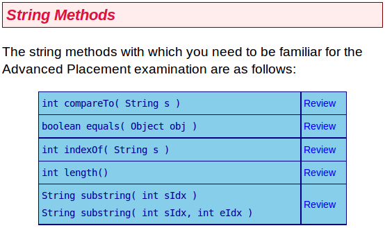

Our class as a whole was stumped by Lab 6.2, so I thought this a good time to revisit our Java development environment lite and to encourage you to review the String methods you learned here:

Strings are important things. I strongly recommend you become very familiar with these string methods and learn how to use them well. Lab 6.2 is aimed at getting you to do this very thing.
A trial web site is developed on which passengers may specify their meal preferences prior to flying. They do so by entering a phrase that is converted to lower case and then stored in a String variable, request. Write code that stores in the int mealcode the value corresponding to the first of the following conditions that applies:
| Meal Code | Condition |
|---|---|
| 1 | request contains either "no beef" or "chicken" but not the word "child" |
| 2 | request contains the word "beef" but not the word "child" |
| 3 | request contains the word "vegetarian" |
| 4 | request contains the word "child" but not the word "vegetarian" |
| 0 | if none of the above conditions is met |
Here is a runnable solution to this problem:
public class Act6_2 {
public static void main(String[] args) {
String request = "child lo mein";
int mealcode;
if (request.indexOf("no beef") != -1 ||
request.indexOf("chicken") != -1 &&
request.indexOf("child") == -1)
{
mealcode = 1;
}
else if (request.indexOf("beef") != -1 &&
request.indexOf("child") == -1)
{
mealcode = 2;
}
else if (request.indexOf("vegetarian") != -1)
{
mealcode = 3;
}
else if (request.indexOf("child") != -1 &&
request.indexOf("vegetarian") == -1)
{
mealcode = 4;
}
else
{
mealcode = 0;
}
System.out.println(mealcode);
}
}
An array meals contains five elements corresponding to the meal codes 0 through
4 in Activity 6.2. For example, element meals[1] contains the
number of Chicken-based adult
meals requested, meals[4]
contains the number of Burger child
meals, and so on. Element
meals[0] contains the number of requests in which none of the
conditions for a particular meal type was met.
Write code to store in the double cost the cost to the airline of providing the
meals, where the cost for a meal of each type is specified in the table below.
The number of meals in meals[0] should be split equally between
Chicken-based adult
and Beef-based adult
. If this number is not
an even number, then the number allocated to Chicken-based adult
should
be one more than the number allocated to Beef-based adult
.
| Meal Code | Meal Cost |
|---|---|
| 1 | $1.75 |
| 2 | $2.08 |
| 3 | $2.14 |
| 4 | $0.98 |
Here is a runnable solution to this problem:
public class Act6_3 {
public static void main(String[] args) {
int meals[] = {0, 1, 1, 1, 1};
double cost;
if (meals[0] % 2 == 0)
{
cost = meals[0] * (1.75 + 2.08) / 2;
}
else
{
cost = (meals[0] / 2 + 1) * 1.75 + (meals[0] / 2) * 2.08;
}
cost += meals[1]*1.75 + meals[2]*2.08 + meals[3]*2.14 + meals[4]*0.98;
System.out.println(cost);
}
}
Much like in the study of mathematics, learning computer science is a cumulative process. As long as you have a solid understanding of each new concept you learn, it doesn't really become more difficult. Once you allow large holes to develop in your understanding however, the whole learning process quickly grinds to a halt. My impression is that you all had a hole in your understanding of String methods, which explains your trouble with exercise 6.2.